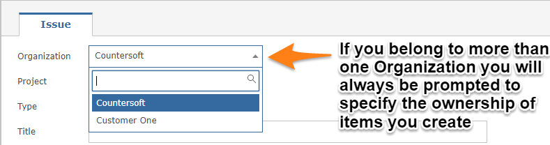
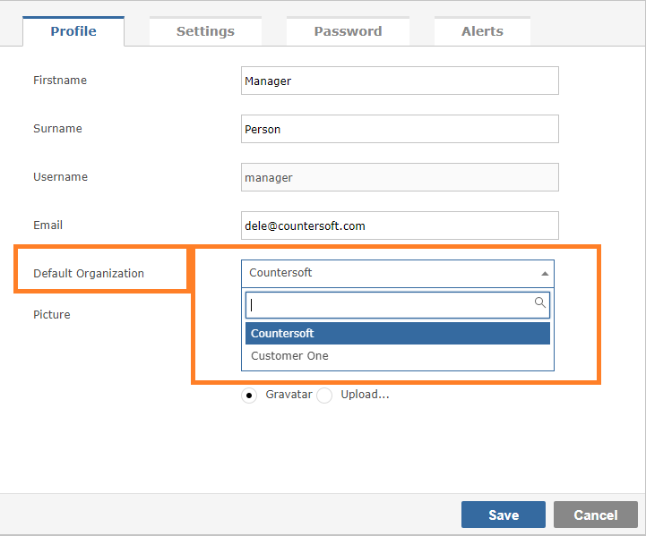

Depending on your permissions, you can create new items in different ways. The first and most obvious method is to click on the plus sign located top right of every screen.
You will be presented with a data entry form that requires completion. Selecting the Project or the Type can dynamically change the fields you are required to provide.
If on the Project Template the Screens definition of the item type you are creating makes a field mandatory, it will appear on the form in bold
If you use Gemini's Organizations feature, every item you create will belong to an Organization. If you belong to a single Organization you will not see the field or be prompted for a value. Users who belong to multiple Organizations must select the Organization they want to create an item for.

Users who belong to multiple Organizations will be able to set their default Organization on their User Profile.

Certain fields allow for rich text content, and Gemini has a Rich Text Editor. Gemini's Rich Text Editor can use "Canned Comments" for rapid entry of replies and descriptions
Date fields have calendar controls to make selecting dates simple.
Any missing, mandatory fields will be highlighted and will require input before the item can be created.
Default values, set in Project Settings, will appear on the form. Gemini can do things like default Start Dates using the meta value "TODAY" and Due Date using "TODAY+14" etc.
Gemini lets you create sophisticated data entry rules that must be met for an item to be created. If your conditions aren't met (e.g High Priority but no Resource Assigned) you can veto creation with a message to the user.
Gemini's Rules & Actions can also run after data entry, on edit events. Gemini's SLA functionality continually assesses items. It can change data values, escalating status/priotity etc. and send out emails and alerts.
If you want a quick way to enter basic details of items that have a hierarchical dependency (say during a planning meeting) you can use Gemini's Quick Entry.
You can use Gemini's Excel Import functionality to bulk upload a number of items, particularly items from external sources.